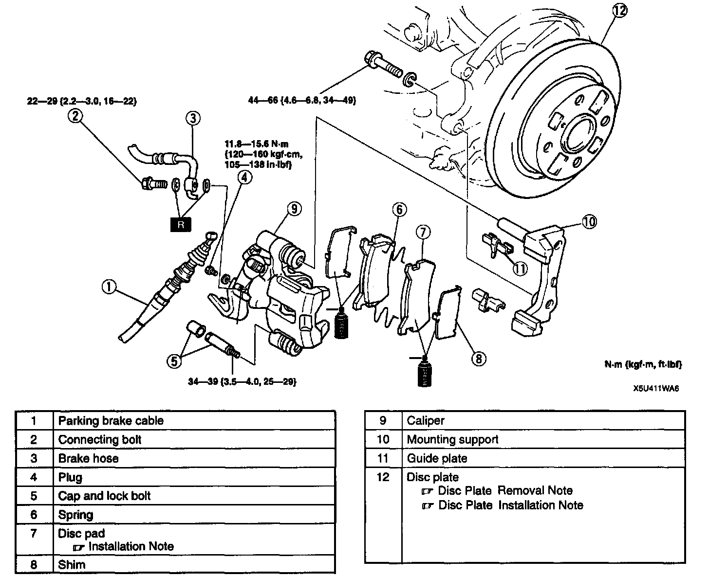
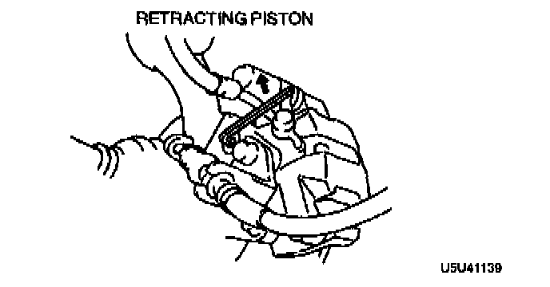
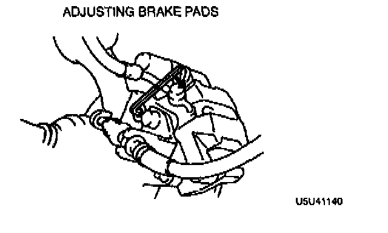

Rear

REAR BRAKE (DISC) REMOVAL/INSTALLATION
1. Remove in the order indicated in the table.
2. Install in the reverse order of removal.
Disc Pad Installation Note

1. Turn the manual adjustment gear counterclockwise by using an Allen wrench to pull the brake caliper piston back.
2. Install the disc pads.
3. Turn the manual adjustment gear clockwise until the brake pads just touch the disc plate.

4. Return the manual adjustment gear counterclockwise 1/3 turn.